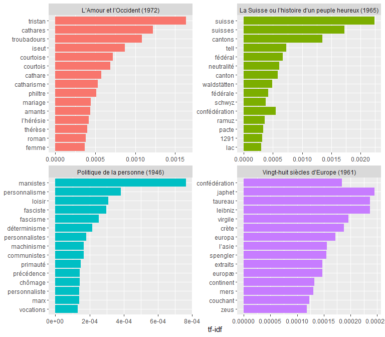

All the texts of Denis de Rougemont’s books
The package rougemont gives access to all the texts of Denis de Rougemont’s books including republications, at the exception of The Heart of Europe (1941) and The Christian Opportunity (1963), in a Tidy format, taken from the digital books library of the Rougemont 2.0 project from the University of Geneva.
Learn more about the Rougemont 2.0 project of the University of Geneva here.
Installation
Install the package from Github.
# install.packages("remotes") remotes::install_github("lgnbhl/rougemont")
Usage
Overview of the rougemont dataset.
library(dplyr) #> #> Attaching package: 'dplyr' #> The following objects are masked from 'package:stats': #> #> filter, lag #> The following objects are masked from 'package:base': #> #> intersect, setdiff, setequal, union library(rougemont) as_tibble(rougemont) #> # A tibble: 47,825 x 6 #> title_book date publisher url_book url_chapter text #> <chr> <chr> <chr> <chr> <chr> <chr> #> 1 Les Méfaits d~ 1929 Les Petites~ https://www.~ https://www.un~ [p. 7] #> 2 Les Méfaits d~ 1929 Les Petites~ https://www.~ https://www.un~ Avant-propos~ #> 3 Les Méfaits d~ 1929 Les Petites~ https://www.~ https://www.un~ Le dire une ~ #> 4 Les Méfaits d~ 1929 Les Petites~ https://www.~ https://www.un~ Il ne faut p~ #> 5 Les Méfaits d~ 1929 Les Petites~ https://www.~ https://www.un~ Il a paru su~ #> 6 Les Méfaits d~ 1929 Les Petites~ https://www.~ https://www.un~ Mon dessein ~ #> 7 Les Méfaits d~ 1929 Les Petites~ https://www.~ https://www.un~ Nous vivons ~ #> 8 Les Méfaits d~ 1929 Les Petites~ https://www.~ https://www.un~ D’ailleurs, ~ #> 9 Les Méfaits d~ 1929 Les Petites~ https://www.~ https://www.un~ — Alors ? #> 10 Les Méfaits d~ 1929 Les Petites~ https://www.~ https://www.un~ — Justement.~ #> # ... with 47,815 more rows
First lines of Denis de Rougemont’s Les Méfaits de l’Instruction publique (1929).
rougemont$text[1:4] #> [1] "[p. 7]" #> [2] "Avant-propos §" #> [3] "Le dire une bonne fois." #> [4] "Il ne faut pas songer à décrire en 40 petites pages tous les méfaits de l’instruction publique. C’est à peine assez pour indiquer leur ordre de grandeur ; à quoi je me bornerai."
The metadata of the Rougemont 2.0 project is also accessible.
rougemont_metadata #> # A tibble: 2,646 x 7 #> url_chapter title_chapter url_book title_book url_img publisher date #> <chr> <chr> <chr> <chr> <chr> <chr> <chr> #> 1 https://www.~ Avant-propos https://w~ Les Méfait~ https://~ Les Peti~ 1929 #> 2 https://www.~ 1. Mes prisons https://w~ Les Méfait~ https://~ Les Peti~ 1929 #> 3 https://www.~ 2. Descriptio~ https://w~ Les Méfait~ https://~ Les Peti~ 1929 #> 4 https://www.~ 3. Anatomie d~ https://w~ Les Méfait~ https://~ Les Peti~ 1929 #> 5 https://www.~ 1. Le program~ https://w~ Les Méfait~ https://~ Les Peti~ 1929 #> 6 https://www.~ 2. Les examens https://w~ Les Méfait~ https://~ Les Peti~ 1929 #> 7 https://www.~ 3. L’égalitar~ https://w~ Les Méfait~ https://~ Les Peti~ 1929 #> 8 https://www.~ 4. Le gavage https://w~ Les Méfait~ https://~ Les Peti~ 1929 #> 9 https://www.~ 5. La discipl~ https://w~ Les Méfait~ https://~ Les Peti~ 1929 #> 10 https://www.~ 6. La prépara~ https://w~ Les Méfait~ https://~ Les Peti~ 1929 #> # ... with 2,636 more rows
Tidy text analysis
The data is structured in a tidy way, in order to ease the use of packages such as tidytext.
For example, let’s calculate the tf-idf to discover what are the most important (i.e. common) words for the content of four selected books of Denis de Rougemont.
library(tidytext) library(ggplot2) rougemont %>% filter(title_book %in% c("Politique de la personne (1946)", "Vingt-huit siècles d’Europe (1961)", "La Suisse ou l’histoire d’un peuple heureux (1965)", "L’Amour et l’Occident (1972)")) %>% unnest_tokens(word, text) %>% count(title_book, word) %>% bind_tf_idf(word, title_book, n) %>% group_by(title_book) %>% top_n(15, tf_idf) %>% ungroup() %>% mutate(word = reorder(word, tf_idf)) %>% ggplot(aes(word, tf_idf, fill = title_book)) + geom_col(show.legend = FALSE) + labs(x = NULL, y = "tf-idf") + facet_wrap(~title_book, ncol = 2, scales = "free") + coord_flip()

Other information
The eRougemont Github project is accessible here.
This package is in no way officially endorsed by the University of Geneva.